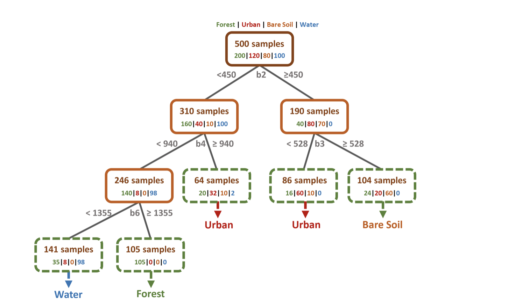

6 Week07
This week introduced a series of machine learning methods applied to remote sensing image classification, and conducted practical exercises using the Google Earth Engine (GEE) platform. Thus, the chapter summarises various machine learning methods (including supervised classification and unsupervised classification), discusses their applications in remote sensing images, and provides my reflection.
1. Content Summary: Classification Ⅰ
The application of machine learning in remote sensing classification is crucial, due to its efficiency in extracting various features from the imagery datasets. Considering the study at large geographical scales, manual processing is prone to errors and time-consuming. Machine learning effectively addresses the challenges by automating tasks and obtaining highly accurate results, which can improve efficiency and reduce human intervention. Its application has notably accelerated the progress of remote sensing research, particularly in large geographical areas, being utilised for tasks like land cover classification and extracting features such as urban green space and forest fires.
However, it is worth noting that machine learning methods are diverse and demonstrate varied results in their applications. Therefore, understanding these machine learning methods is crucial for our application in remote sensing research. Next, in terms of the methods of image classification, I will review the supervised classification and unsupervised classification methods mentioned in the lecture.
GISGeography(2023) summarised the definitions of supervised and unsupervised classification and the differences between them, as shown in Tbale 1.
1.1 Unsupervised Classification
1.1.1 The Fundamental Steps
The fundamental steps for unsupervised classification involve:
- Create Cluster
- Assign Cluster
1.1.2 The Classifiers
The common clustering image algorithms are:
- K-mean
The K-means algorithm is more familiar to us. It assumes that the number of clusters is known prior, and the number of clusters can not be changed as long as the iteration is completed (Sirat, Setiawan and Ramdani, 2018) .
- ISODATA(The Iterative Self-Organizing Data Analysis Technique)
ISODATA is an improved algorithm of K-means, which uses an iterative algorithm to automatically adjust the number of clusters (Arai and Bu.2007). The main work principles of ISODATA are summarised by (Jensen 2015,. pp.406-407) as follows:
- Merge Cluster: Merging clusters occurs when the separation distance in the multispectral feature space falls below a user-specified threshold.
- Split Cluster: If the standard deviation of a cluster exceeds a predefined value, and the number of members (pixels) is twice the minimum threshold, the cluster is split into two separate clusters.
1.2 Supervised Classification
1.2.1 The Fundamental Steps
The fundamental steps for supervised classification are as follows:
- Class Definition:
Assemble features which have a property that stores the known class label and properties storing numeric values for the predictors. - Pre-processing:
Instantiate a classifier. Set its parameters if necessary. - Training:
Train the classifier using the training data. - Pixel Assignment:
Classify an image or feature collection. - Accuracy Assessment:
Estimate classification error with independent validation data.
1.2.2 The Classifiers
The common unsupervised image algorithms are:
- Classification and Regression Tree (CART)
CART is a tree-based framework and consists of classification trees and regression trees. It can be used to divide the dataset into subsets as a tree structure, which can capture different classes (for classification)and predict the value (for regression). Its application can capture patterns and regularities in data sets to maximise the homogeneity or similarity within each group, making the results more accurate. Gini impurity (for classification) and SME(Squared Mean Error, for regression ) in CART serve as criteria for classifying the subset aiming to minimise impurity or error of resulting subsets. In Figure 1, RESEDA(no date) provides an tree-structure example for CART applied for Land classification,which can help me to understand the processing.

Referring to the similar content of CASA0006, the advantages and disadvantages of CART are summarised as follows:
Advantages:
- Interpretability : relatively easy to understand (compared to many trees).
- Flexibility : no assumptions of data distribution and no transformations needed.
Disadvantages:
- Lack of smoothness : slight changes in the predicators can have a big impact on the response.
- Tendency of overfitting : meaning that the tree fits well to the training data but is unable to generalise to new data. Thus, it is essential to cut the tree levels to improve the generalisation ability of CART (Lawrence and Wright, 2001)
- Random Forest (RF)
RF is an ensemble classifier that consists of many CARTs. Based on the summary of Aziz et al. (2024), the RF workflow (Figure 2) for land classification includes: (1) Random Forests operate on a given dataset with N records(the number of samples) and K outputs (the number of classes);(2) The RF model creates decision trees for each set of samples to produce the output;(3) the final output is determined by assigning greater importance to the majority of votes.
After the training phase, the RF model becomes adept at making predictions or inferences on new, unseen data. The final result provides distinct labels representing different land types, showcasing its ability to generalise and classify land use with flexibility and accuracy.
Referring to the similar content of CASA0006, the advantages and disadvantages of RF are summarised as follows:
Advantages:
- No assumptions on data distribution.
- Able to model non-linear relationship and feature interactions.
- Good predictive performance (especially for tabular data).
- Good generalisation.
Disadvantages:
- Low interpretability: not intuitive, although there are some interpretation methods.
- Low interpretability: not intuitive, although there are some interpretation methods.
- Other Classifiers
In addition to CART and RF, the following classifiers were introduced in the lecture. Although their definition and applications are a bit complicated for me, they are very interesting and offer more possibilities to image classification. I hope to deepen my understanding of them in future studies.
- Maximum Likelihood:
The maximum likelihood is a decision rule classifier. It assigns pixels in an image to different landover classes based on their spectral characteristics, using probabilities and decision rules (MacLachlan, 2024). The goal is to maximise the likelihood of observed pixel values given class statistics. The advantages of the classifier are simple and robust enough to accommodate large datasets and the modifications (Manuel Núñez et al., 2019).
- Support Vector Machines(SVM):
As shown in Figure 3, SVM is a linear binary classifier - like logistic regression(MacLachlan, 2024).The algorithm can be used for linearly and nonlinearly separable data, which primarily work for classification problems (Srivastava, 2021). Based on the collection of labelled data instances, the SVM training algorithm endeavours to identify a hyperplane that divides the dataset into a distinct, pre-defined number of classes in accordance with the patterns observed in the training examples (Vapnik, 2006).

Referring to Geeksforgeeks(2023), the main advantages and disadvantages of SVM are as follows:
Advantages:
- Handling in High-Dimensional Spaces and small datasets.
- Modelling non-linear decision boundaries.
- Robust to Overfitting (Leading to better generalisation to unseen data).
- …
Disadvantages:
- It is not suitable for very large data sets with many features as the algorithm is computationally intensive.
- Limited to Binary Classification.
- Limited interpretability.
- Choice of Kernel
- …
2. Application
3. Reflection
4. Reference
Arai, K. and Bu, X. (2007). ‘ISODATA clustering with parameter (threshold for merge and split) estimation based on GA: Genetic Algorithm’, Reports of the Faculty of Science and Engineering Saga University,36.
Aziz, G., Minallah, N., Saeed, A., Frnda, J. and Khan, W. (2024). ‘Remote sensing based forest cover classification using machine learning’. Scientific Reports, 14 (1), p. 69. doi: 10.1038/s41598-023-50863-1.
Bhatnagar, S., Gill, L. and Ghosh, B. (2020). ‘Drone Image Segmentation Using Machine and Deep Learning for Mapping Raised Bog Vegetation Communities’. Remote Sensing, 12 (16), p. 2602. doi: 10.3390/rs12162602.
Geeksforgeeks(2023) Support vector machine in Machine Learning. Available at: https://www.geeksforgeeks.org/support-vector-machine-in-machine-learning/ (Assessed: 08 March 2024)
GISGeography (2023) Supervised and Unsupervised Classification in Remote Sensing. Available at: https://gisgeography.com/supervised-unsupervised-classification-arcgis/ (Assessed: 08 March 2024)
Jensen, J. R. (2015). Introductory Digital Image Processing. 4th edn. Pearson Higher Education US (A Remote Sensing Perspective).
Lawrence, R.L., Wright, A., (2001). ‘Rule-based classification systems using classification and regression tree (CART) analysis’. Photogrammetric Engineering & Remote Sensing, 67 (10), pp.1137–1142.
MacLachlan, A. (2024) Remotely Sensing Cities and Environments. Lecture 6: Classification. Available at: https://andrewmaclachlan.github.io/CASA0023-lecture-6/#1 (Assessed: 08 March 2024)
Manuel Núñez, J., Medina, S., Ávila, G. and Montejano, J. (2019). ‘High-Resolution Satellite Imagery Classification for Urban Form Detection’. in B. Rustamov, R. (ed.) Satellite Information Classification and Interpretation. IntechOpen. doi: 10.5772/intechopen.82729.
Mountrakis, G., Im, J. and Ogole, C. (2011). ‘Support vector machines in remote sensing: A review’. ISPRS Journal of Photogrammetry and Remote Sensing, 66 (3), pp. 247–259. doi: 10.1016/j.isprsjprs.2010.11.001.
RESEDA(no date) Random Forest:Decision Tree Method. Available at:https://blogs.fu-berlin.de/reseda/random-forest/ (Assessed: 08 March 2024)
Sirat, E. F., Setiawan, B. D. and Ramdani, F. (2018). ‘Comparative Analysis of K-Means and Isodata Algorithms for Clustering of Fire Point Data in Sumatra Region’. in 2018 4th International Symposium on Geoinformatics (ISyG). 2018 4th International Symposium on Geoinformatics (ISyG), Malang: IEEE, pp. 1–6. doi: 10.1109/ISYG.2018.8611879.
Srivastava, A.(2021) Support Vector Machines: SVM. Available at: https://medium.com/analytics-vidhya/support-vector-machines-svm-87841ab63b8 (Assessed: 08 March 2024)
Vapnik V. ( 2006) Estimation of Dependences Based on Empirical Data. USA: Springer Science & Business Media